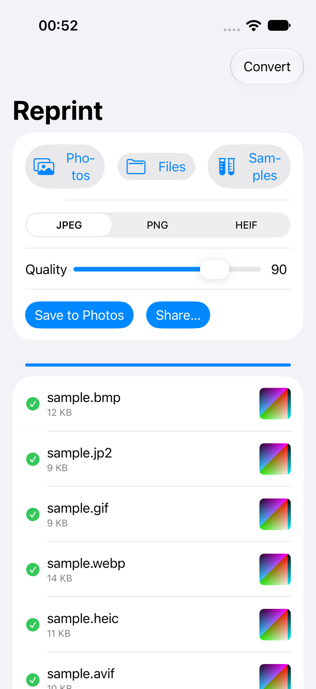
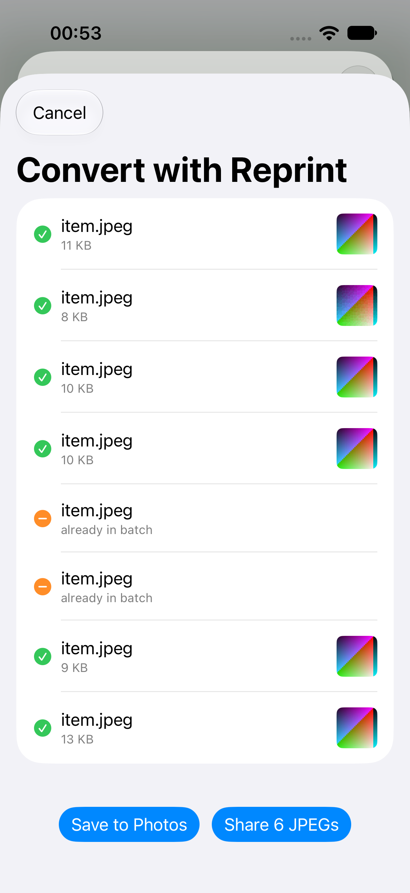

Plurabel
Reprint
The image nobody can open becomes the JPEG anybody can. Weird formats — webp, psd, camera RAW — convert on the phone.
What it does
- A .webp from a download, a .psd a designer sent, a .dng out of a camera — pick them from Photos or Files, get JPEG (or PNG/HEIF) copies.
- “Convert with Reprint” sits on the system share sheet, right where the unopenable file arrives.
- Conversion runs through the phone’s own imaging — no uploads, no queue.
- Strips happen per file: anything it can’t convert is listed with a reason, not a crash.
What it won’t do
- Overwrite or move your originals.
- Convert video files.
- Be a photo editor — it changes the container, not the picture.
- Charge you again.


The unopenable file, converted where it landed.
Coming to the App Store